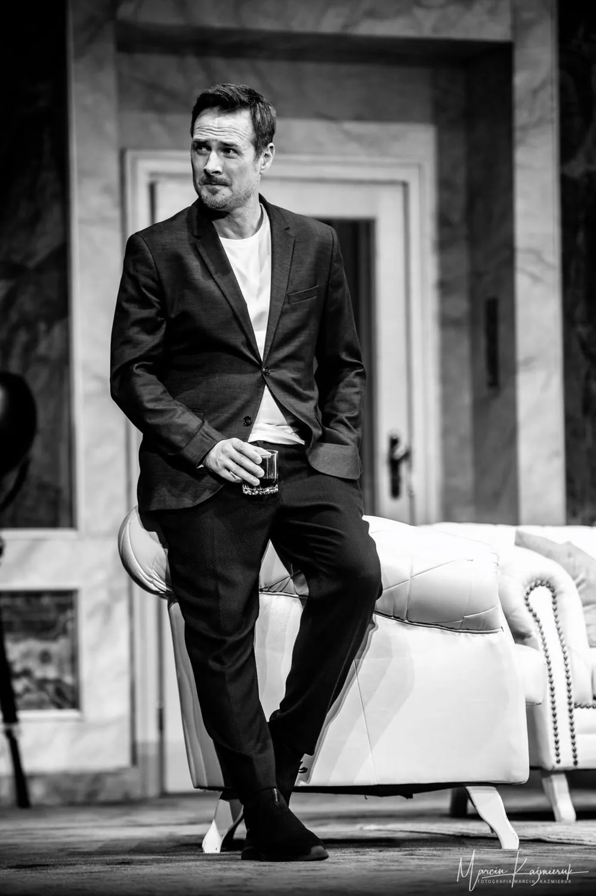
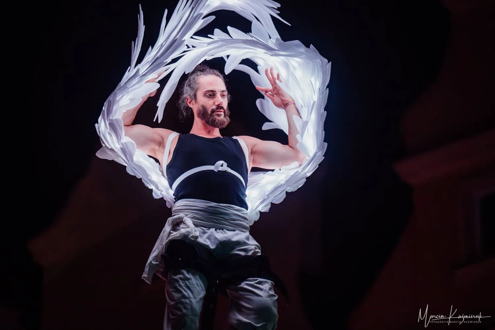
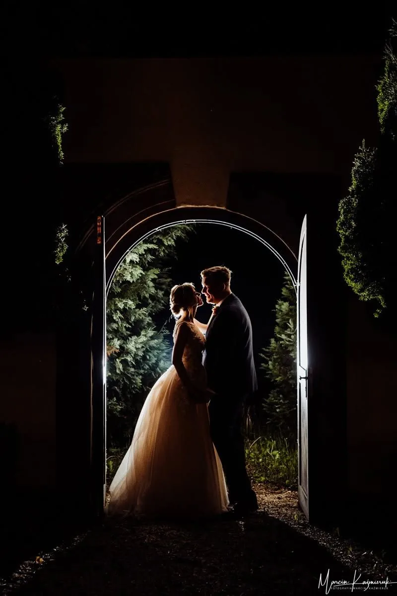
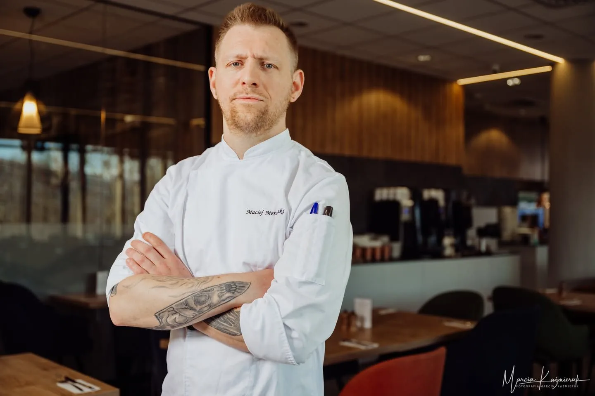
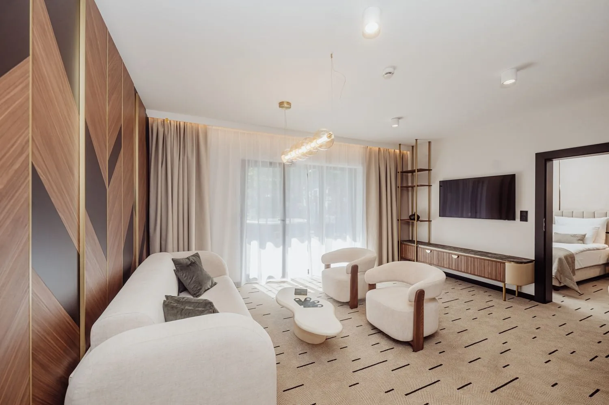
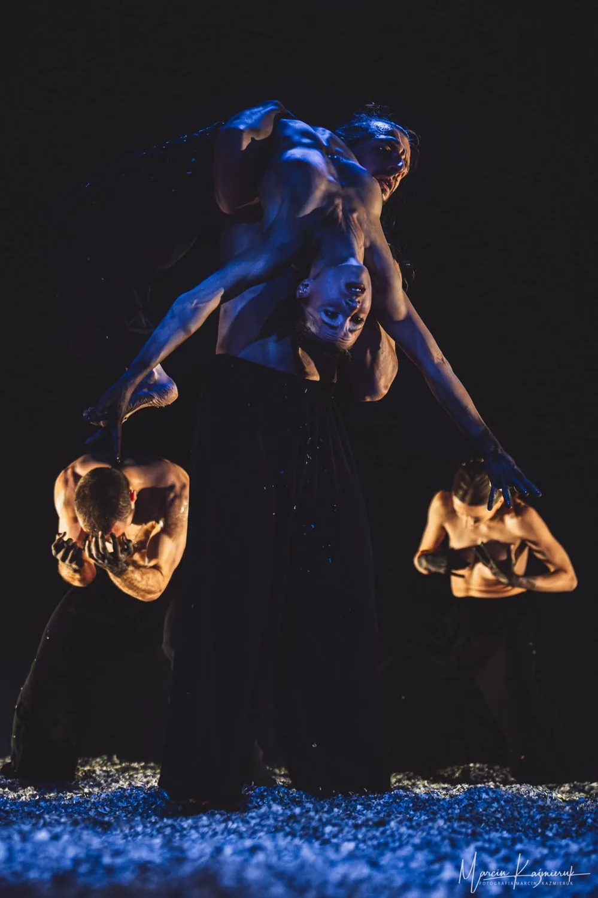
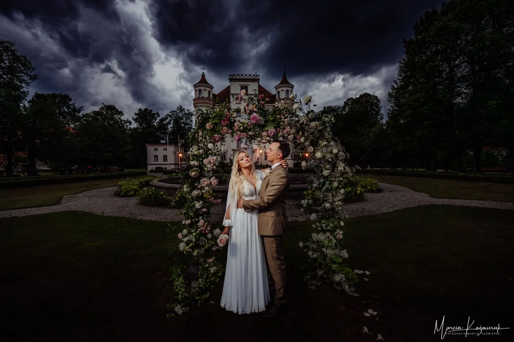

KulinarnaZobacz →
KulinarnaZobacz →
BiznesZobacz → WydarzeniaZobacz →
WydarzeniaZobacz →
TeatrZobacz →
ŚlubyZobacz →Uchwycić
to, co prawdziwe
Gastronomia, marki, wydarzenia, scena i śluby. Dokumentuję realne momenty, od najważniejszych wydarzeń polskiej sceny kulinarnej po najważniejszy dzień w życiu.
Co mogę dla Ciebie sfotografować

Fotografia kulinarna
#1 wśród fotografów kulinarnych Foodelia 2025. Dania, menu, atmosfera lokalu.
Zobacz →
Biznes i portret
Wnętrza restauracji, portret wizerunkowy dla marek i osobistości.
Zobacz →
Hotele i wnętrza
Hotele, restauracje i wnętrza, które sprawiają, że gość chce tam być, zanim przyjedzie.
Zobacz →
Wydarzenia i scena
Festiwale, gale, koncerty. Beats for Love, Gault&Millau, Bocuse d'Or, Opole.
Zobacz →
Teatr
Stały fotograf Teatru im. Norwida. Spektakle, próby, festiwale teatralne.
Zobacz →
Śluby
Reportaż z najważniejszego dnia. Wyróżnienia Flash Masters, Fearless i stypendium Two Mann Studios.
Zobacz →
Wyróżnienia i prasa
IPA 2026 (1. miejsce), Foodelia #1, Forbes, Newsweek, Flash Masters, Osobowość Roku.
Zobacz →Co mówią klienci
★★★★★5,0 / 5 · 133 opinie na Google, 309 na FacebookuZdjęcia pełne emocji, ciepła i pozytywnej energii. Kadry nietuzinkowe, naturalne, wzruszające. Prosto z aparatu wyglądają idealnie. Czuliśmy się, jakbyśmy znali się od lat.
Naturalne, piękne, oddające emocje, a przy tym oryginalne. Zaufajcie Marcinowi, a nie będziecie żałować. Zadzieje się magia. Szkoda, że nie można dać dziesiątki.
Świetnie wyłapuje emocje. Jego pomysły sprawiają, że zapominasz, że jesteś przed obiektywem. My i goście weselni jesteśmy zachwyceni zdjęciami.
Porozmawiajmy o Twoim projekcie
Ślub, sesja kulinarna, wydarzenie czy spektakl, opowiedz mi, co chcesz uwiecznić.
Kontakt